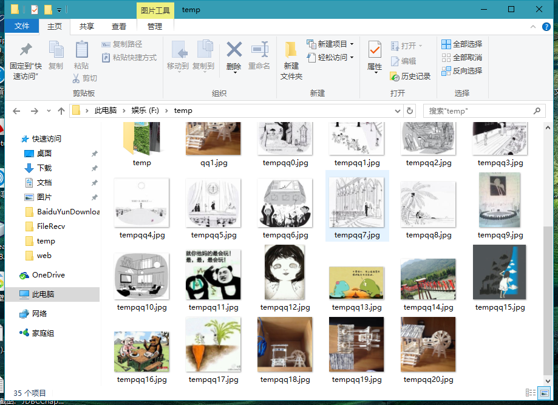

Java Python on qzone.qq.com
接上篇。前几天有爬取空间相册的想法，可是因为QQ空间的结构复杂，没能模拟登陆成功，所以我换了种方法。采用selenium框架模拟浏览器直接登陆爬取
0、前期准备：
selenium框架：因为qq空间结构复杂，有大量的js渲染。所以如果用常规的方式获取页面html是不行的，除非深入了解页面的js数据，
鉴于要求复杂，所以我选择了内置浏览器内核的selenium框架来实现。这样的话优势可以模拟登陆任何网页，不足就是效率低。
selenium框架可以在其官网上查看文档和下载，需要注意的是该网站需要翻墙~~~了解了selenium的一些API和例子之后，咱们就可以开始爬qq空间了
1、配置selenium框架环境
下载导入selenium架构包jar，selenium3.0合并了RC和core两个包，所以现在只需要导入combine包就好了
下载浏览器第三方驱动，我用的是ChromeDriver(上述文件在官网上都有介绍与下载(并没有中文文档))
环境搭建好了之后就可以模仿官网的简单例子进行测试
1、新建driver驱动：WebDriver driver=new ChromeDriver();
2、获取网页连接:driver.get("[this is a Url]");
3、获取网页元素：driver.findElement(By.id("xxx"));
4、元素赋值：WebElement.sendKeys("xxxx");
5、元素点击：WebElement.click();
......具体的参考文档。
2、模拟登陆
明确目标，qq空间都是以user.qq.com/[qq号]的形式组成，可是访问的话需要自己处于登陆状态。 打开i.qq.com可以发现账号密码输入框，用sendKeys的方法赋值输入账号和密码，然后点击登录按钮。值得注意的是， 这里的登录界面是存在于一个iframe界面的，所以需要driver.switchTo()转到对应的iframe界面中再进行操作
3、获取图片链接
登录上空间之后我们就可以抓取不需要访问权限的qq用户信息了，首先访问user.qq.com/[qq]， 会发现相册的链接再上述链接之后加了[/4]，所以我们直接访问user.qq.com/[qq]/4就可以看到用户相册了。
然后我们需要具体访问每个相册文件夹，这可以通过一个循环来实现。
访问到了具体图片后，我们来分析每张图片的压缩图：通过检查元素可得知图片的img链接，复制链接就可以得到图片的压缩版本了。 再然后点击图片来访问大图，复制其链接。这时候我们通过对比就能发现两者之间的规律：压缩图的链接中有个[/m/]，而大图的链接是[/b/]. 这样的话，我们就可以通过正则替换来得到所需要的图片源链接
得到图片链接之后就可以通过Url连接来保存图片到本地了，具体方式参照上文
4、fix and test
效果截图：
以下是源代码，代码因为隐私问题修改了三处1、目标QQ2、自己的账号3、自己的密码
package selenium0;
import java.io.ByteArrayOutputStream;
import java.io.File;
import java.io.FileOutputStream;
import java.io.IOException;
import java.io.InputStream;
import java.net.HttpURLConnection;
import java.net.MalformedURLException;
import java.net.URL;
import java.util.ArrayList;
import java.util.List;
import java.util.logging.Level;
import java.util.logging.Logger;
import org.openqa.selenium.By;
import org.openqa.selenium.WebDriver;
import org.openqa.selenium.WebElement;
import org.openqa.selenium.chrome.;;
/**
@author sharping
/
public class Selenium0 {
static String QQ="123456789";
static String path;
/**
@param args the command line arguments
/
public static void main(String[] args) throws InterruptedException {
path="f:\temp\"+QQ+"\";
new File(path).mkdirs();
List<String> list=getPhotoUrl();
optimize(list);
for(int i=0;i<list.size();i++){
try {
saveImage(list.get(i),QQ,i);
} catch (IOException ex) {
Logger.getLogger(Selenium0.class.getName()).log(Level.SEVERE, null, ex);
}
}
}
static List<String> getPhotoUrl() throws InterruptedException{
List<String> listPhotos=new ArrayList();
System.setProperty("webdriver.chrome.driver", "C:\\Users\\sharping\\AppData\\Local\\Google\\Chrome\\Application\\chromedriver.exe");
WebDriver driver = new ChromeDriver();
String url="http://i.qq.com/";
driver.get(url);
System.out.println("title:"+driver.getTitle());
driver.manage().window().maximize();
driver.switchTo().frame("login_frame").findElement(By.id("switcher_plogin")).click();
driver.findElement(By.id("u")).sendKeys("[qq账号]");
driver.findElement(By.id("p")).sendKeys("qq密码");
driver.findElement(By.id("login_button")).click();Thread.sleep(3000);
driver.get("http://user.qzone.qq.com/"+QQ+"/4");
Thread.sleep(3000);
List<WebElement> list=driver.switchTo().frame("tphoto").findElements(By.className("js-album-desc-a"));
int folder=list.size();
for(int i=0;i<folder;i++)
{
driver.get("http://user.qzone.qq.com/"+QQ+"/4");
Thread.sleep(3000);
driver.switchTo().frame("tphoto").findElements(By.className("js-album-desc-a")).get(i).click();
Thread.sleep(3000);
List<WebElement> listPhoto=driver.findElements(By.className("j-pl-photoitem-img"));
for(int j=0;j<listPhoto.size();j++)
listPhotos.add(listPhoto.get(j).getAttribute("src"));
}
driver.close();
return listPhotos;
}
static void saveImage(String strUrl,String name,int nameIndex) throws MalformedURLException, IOException{
//构造URL
URL url = new URL(strUrl);
//构造连接
HttpURLConnection conn = (HttpURLConnection)url.openConnection();
//这个网站要模拟浏览器才行
conn.setRequestProperty("User-Agent","Mozilla/5.0 (Windows NT 6.3; WOW64; Trident/7.0; rv:11.0) like Gecko");
//打开连接
conn.connect();
//打开这个网站的输入流
InputStream inStream = conn.getInputStream();
//用这个做中转站 ，把图片数据都放在了这里，再调用toByteArray()即可获得数据的byte数组
ByteArrayOutputStream outStream = new ByteArrayOutputStream();
byte [] buf = new byte[1024];
int len = 0;
//读取图片数据
while((len=inStream.read(buf))!=-1){
outStream.write(buf,0,len);
}
inStream.close();
outStream.close();
String pathTemp=path+name+nameIndex+".png";
//把图片数据填入文件中
File file = new File(pathTemp);
FileOutputStream op = new FileOutputStream(file);
op.write(outStream.toByteArray());
System.out.println(pathTemp+" has been saved\n");
op.close();
}
public static void optimize(List<String> list){
for(int i=0;i<list.size();i++){
String str=list.get(i).replaceAll("/m/", "/b/");
list.set(i, str);
}
}
}